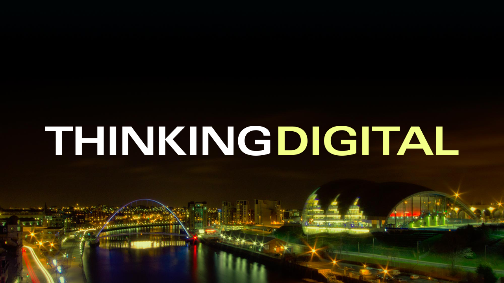

Thinking Digital 2016

Thinking Digital Workshop - Virtual Reality : Beyond Gaming @ VRTGO Labs, Gateshead
VRTGO Labs and Conference - Carri Cunliffe, Secret Sauce
A tech based consultancy that works with games and VR and run VRTGO and VRTGO Conference and involved with the Edinburgh Interative Games Festival.
What is VRTGO Labs? First centre for excellence in VR & AR in Europe supported by Gateshead Council with cutting edge office space, association of 24 VR and AR companies, created back in February 2015 and is full with a waiting list of companies to be part of the facility.
It is going to be a focal point for AR and VR companies for people who require that expertise have somewhere they can go. Evangelising VR and AR solutions and host and attend exhibitions, there will be a launch event in July and a workshop in September and hosting a VRTGO conference.
Engaging with partners with hardware providers, service providers and colleges and universities, engage what research is going on. There is a massive amount of companies involved such as Occulus, Enigma Interactive, Spearhead and many more. Some of the brands being worked with McDonald's, Marvel, Whirlpool, British Airways and Boursin Cheese.
Northern Centre for Emerging Technology - is a cutting edge facility that is being built, a great facility for testing, demoing to clients and to develop products and are looking for international partners, will be filled with existing companies and will be open for business in 2017, there is already a waiting list of companies and will be a draw for buyers, the name is yet to be fully decided as is the location.
VRTGO Conference - once of the largest AR/VR conference on 3rd November in Baltic Art Gallery with international speakers and exhibitors and companies such as Unity, Samsung Gear VR and ARM.
Vector 76 - Shaun Allan
Started seven years ago as a development studio in VR with Second Life building objects and environments in this, came from Eutechnyx and brought their skills to Second Life and was tasked to build a virtual version of local school. After that began to do visualisation work for Zero Carbon Futures, part of Nissan. Did some work for Bede's World and are currently in talks to revamp work they did for them once that facility re-opens. Also worked on smaller projects such as Road Respect in 2014 and build an Augmented Reality app for them and made the store front of a shop a target for augmented reality, the car would crash through the store-front window as part of the experience, in the store were three screens to make up a driving experience and bringing that kit around wasn't very easy. For the following year they did an Oculus DK2 version of driving simulator experience for Road Respect in 2015, there were two modes a normal mode and an affected by drugs/drink mode that altered experience and framerate, which was the first of it's kind in the UK, installed into a minibus to make it more portable, also helped make the social engagement increase for the client and helped improve driving experience for users.
Hammerhead VR - Christian Frausig
Been around for three years and focus entirely on VR and work with agencies to develop brand experiences for clients, they work on their own projects too. Their team is mostly games people and experience with game engines and related technologies, also have people from VFX and Film expertise who also bring in some innovative techniques like photogramity.
They also use the Kinect to capture motion with some of their experiences, they also do facial capture with cameras and motion capture. They have done a few things in VR, they did a proof of concept of a SuperYacht Visualiser as a sales tool - is a real time product visualisation and can show off customisation features and customisations available. Also worked on a 360 degree criving experience for Lexus which allowed people to feel they were sitting in the car, using captured video and need to create an experience that was quite fluid, to create 360 camera content doesn't require any specialist or CG knowledge and can also use a minimum amount of kit to capture the content, the resolution of these videos is quite low but Youtube are working on improving quality and framerate and can even do 3D 360 videos too.
Did Boursin Sensorium for the Cheese brand and make their brand more fun, did a fun sensory experience to show at food festivals and quite a surreal rollercoaster type experience, but was sharable and could share 6 seconds of footage to share with friends, got 100,000 views of video and had 5,000 people visiting event and 8,000 people downloading via Oculus Share.
Did Thunderhead experience for a web analytics company and is difficult to explain to people and wanted to show something at a festival of marketing, wanted an ice breaker experience with something to talk about and the client were very happy with it and was quite a successful if not abstract campaign. Did a Kitchen of the future concept shown off at CES as a physical experience but also wanted a virtual version of this experience to show off the possibilities, the physical version didn't work but luckily the virtual version worked perfectly!
Projects take around two - four months, but longest projects take around five months to build for the longest experiences, need to have enough time to make people feel immersed but not too long so it feels uncomfortable, so around two-three minutes is the sweet spot for experiences.
Build a VR adaptation of a short film done to get attention from movie makers and want new ways to engage with fans and media, allow people to feel part of the experience - the movie is being sold to MGM and there will be PR, it will be released on Oculus Share and Steam Store for VIVE and PS VR store when available.
Their IP gets released on all the platforms to aim at all possible users, PlayStation VR has lower specs so have to optimise for that platform compared to the PC platforms - there are more standards and built in support from game engines to make things easier and more consistent.
Chronicles VR - Rachel Derbyshire
Been working in heritage and museum sector primarily but will be working on more commercial projects but have a lot of experience of building experiences for a wide range of age groups. They build for HTC Vive, Gear VR, Oculus, Google Cardboard and others. Offer 3D development with CGI and game engines and work with 360 films and videos.
Introducing VR is quite a challenge to those companies who are more used to “apps”, they can capture 360 video and capture binaural audio to give the best experience of feeling like being at the event being recorded, easy to capture live events as CG videos everything has to be created, just need to set up the camera and make sure that camera crew isn't in shot is challenge instead, they can capture in 4K and build a rig with multiple GoPros with bit of tape to successfully capture content.
They did a Viking installation and work from research and illustrations and recreate elements from these, also to Photogrammetry, 3D scanning and modelling of actual pots for the Great North Museum and can see how they were used with the experience. They did a V&A Workshop about working with game engines and photogrammetry and allowed people to see the scope and scale of what VR and AR can do.
They also built experiences with the Make it Digital event with the BBC in 2015 and demoed the various VR experiences they build and had over 200 people check out the content with a wide range of age groups and abilities who were all able to take part, able to achieve cross-generational experiences. People have engaged with content in VR and made people excited to go and find the actual artefact depicted once they had completed the experience, something curators have been wanting people to do for decades.
Build AR experiences to show Ships on the Tyne and Zeppelins over the Tyne, although was a project that didn't happen but would allow people to experience these events on the Tyne, although didn't get past development stage, allowed people to experience a piece of history in a unique way with Augmented Reality.
Evaluation - survey the requirement of location and propose solutions, Capture - principle filming and scanning, Production - bulk of work, Implementation - putting in the work into an environment. All 360 video is a video wrapped around a sphere and can be viewed on YouTube or Facebook but can build a standalone viewer but this does take additional development time if needed.
Do Mobile VR and setup - have done VR theatres with phones and Google Cardboard, which is also good as a marketing tool and can be simply handed out and branded up as needed. Can only do from the neck with mobile VR due to limitations of hardware. Tethered VR allows for more wide range of experience - HTC Vive allows you to move around and explore a virtual space with the headset, but are still tethered to a PC, but allows them to do higher end content.
Thinking Digital Conference - The Sage Gateshead
Sport, Culture, Terrorism - Bill from IBM
Been at IBM at 30 years, CTO of their sales and distribution division and is associated with their partnership with Wimbledon and is at Thinking Digital to talk about the beating digital heart underneath it. In pursuit of greatness, helping Wimbledon to secure fan engagement in a congested sporting calendar, with Formula 1 British GP and UEFA Champion ships clashing with it at some point. IBM have maintained a partnership over 25 years and have raised the game and exceeded expectations. Continuous innovation gives fans unparalleled access to The Championships, wherever and whenever they want, and make sure preserve the character of the tournament by making sure even the Wi-Fi aerials are painted the correct shade of green.
Being the best tennis tournament in the world, staying ahead isn't easy and success requires year on year improvements, need to generate the best sponsorships and arrangements with broadcasters, need to create a loop of being the best, to get to the fans need to invest in their digital platforms but are also in competition with the people they partner with.
What they want to do is drive traffic to Wimbledon.com and make it the next best thing to being there. The website needs to be responsive and adaptive, IBM did a complete web platform in 2015 and previously in 2012, needs to be changed to get out to new customers and new markets, and get the best of any device were visiting the website with, 23% of visitors are desktop users so built unique widescreen features to make best use of the screen with a real-time scoring bar for those users.
Content in context, integrating scores, news, photos, and video - they have 21.1 + 23% million unique devices and 71 +13% million visits and 542 million + 14% page views. Navigation adapted to orientation and screen size and use of imagery to engage fans and for smart phone improved connectivity allows same high quality visual experience and content to take advantage of additional computing power available, more affordable bandwidth. 5.6 million unique devices and 13.3 million mobile visits. They have apps including iPad app offering an optimised immersive experience with 360 video and photography to deliver a second screen experience. Spend a lot of effort in their smartphone app and is quickest way to get the scores, features personalised updates with real time scores powered by IBM MessageSight and rich push messaging to increase engagement.
Creating brand advocates with an integrated approach for social media - attract new audiences and created new advocates, engaging content to draw people towards Wimbledon's digital platforms, Social Media platforms give them a way to talk to different groups in a less formal tone. Needs to be a tailored experience for each of the social platforms. Social engagement powered by images and videos, high quality to create a quality brand experience.
Staying ahead of the game with Wimbledon Social Command Centre for the editorial team, gives them ability to see what's happening on Twitter to understand tweets and see who key influencers are using research projects to improve the experience. Easy to use and designed for a fast paced social environment.
Moving at the speed of expectation with real-time data-driven content, 48 analysts examine data points, turn data into stats who are tennis players who have been taught to use the software and provide the insight that drives fan engagement around the world, these stats enhance TV broadcasters reaching an audience of over 1 billion.
IBM SlamTracker uses predictive analysts to show what a player needs to do to win to give fan insights, mines 41 million Grand Slam data points, every point is significant. Real-time analysts creates notifications to editorial team. Breaking record and significant mile-stones are not missed. Wimbledon delivers the news faster than their competitors. Cognitive computing provides context to Wimbledon's vast archives, Watson Engagement Advisor allows rapid querying using natural language.
IBM Big Data solutions analyse multiple data sources with dynamic provisioning across three active data centres and reduced provisioning time for servers powered by analytics. In pursuit of greatness and have received many awards including best fan experience for a tournament and digital platform of the year and best use of social media - the digital heart that beats underneath the surface of Wimbledon.
Irini Papadimitriou - Crafting our Digital Futures
The museum in an era of social and technological change - museums are a very important part of social function and allow people to talk about issues. Art, science, invention and education which are represented on the pediment mosaic façade on the V&A Museum. Have done creative and technological collaborations such as with the Met Office - designers, scientists, artists and technologists “hack” challenges around climate change with V&A Climate and Fashion Hackathon, the V&A has a big fashion collection and used the hackathon to bring in people together to link fashion world with environmental impact, including the Climate Dress - a canvas for our future climate with wearable technology and clever data analysis to address climate change in The Dress of Our Time showed the effects of climate change if don't take any action to help prevent it.
Network thinking - the power of art to engage people in science, using a set of instruments created to recover valuable nanometals from contaminated soil part of “Cleaning Land for Wealth”. Money No Object - an artist's research exploring the future of currency and value, which was a set of wearable devices about gestures and donations using a hand shake or a high-five and allow them to talk about different economic ideas in a digital society. People also donated more to V&A when engaging with the boxes with designed with features to help encourage people to give money. Bodies of Planned Obsolescence, the global politics of electronic waste, involving many groups to do e-waste recycling in various places such as Lagos, Nigeria and others to encourage recycling of e-waste. Second part of that project was Dreaming Zero Waste - the art of fixing electronics in Europe and Africa - which is about repairing devices and hosted live repair sessions such as the Restart Project to learn skills to repair devices. Innovation comes from the Latin Innovatus which means “Introduce as New”, it's important to engage a wide group of people in new and different ways.
Cyber Arms Race - Mikko Hypponen
He hunts hackers for a living, people who create bot-nets, create DDOS attacks and many other types. It's quite different to defend against hactivist, a criminal attack and a nation state and even extremists and terrorists. Not all of these groups are against all organisations. Complexity is the enemy of security - the more complex these are the harder it is to defend. How many of the Fortune 500 are being attacked - all 500 of them because they are all massive - they are all being attacked right now. Need to build resilience into network to make sure things keep running even when under attack.
The AIDs Information Trojan from the 80's - this was the first ever random Trojan ever found, that asks for money to get data back down - it purported to tell you risk of getting HIV, if you didn't pay for the app it would lock the PC and demand payment to Panama in 1989. The Petya MBR ransom Trojan from 2016 looks about the same and is the same problem from 1989, which is infected via an email attachment, the email mentions an invoice for a payment that is attached which is a Microsoft Word Document and when Macros are enabled this allows the system to be infected by the malware - don't enable content - don't click that button as this will infect system with a ransom Trojan.
If you pay the ransom - they will give you your data back, at least they are honest criminals and it's easy to look up where people have been hit with ransomware and people state their experience about how they unlocked their files, the gangs behind the ransomware are businessman, they do understand that they need to make money. Most of the victims are consumers, there's so much competition on Windows so other platforms are targeted such as OS-X, there's only one that does this so it makes perfect business sense to do this, it even finds the Time Machine servers for Mac to also encrypt those backup files, Bitcoin tends to be the main mechanism to pay the ransoms for these, it's possible to see what payments were made by examining the block chain to see the amounts of money - €300 million of revenues has gone through one of these wallets and they don't even have to pay tax, as a criminal.
Internet of Things - IoT and ICS, there isn't a device that's small enough that won't end up on the internet eventually including all the devices at home such as microwave and toasters. The new kinds of risk the internet has exposed us to are great but it has brought so much good and the downsides still make it worthwhile but hopefully this will apply to IoT. They regularly scan the entire IPv4 address space and control devices that shouldn't be connected to the internet with no username or password and allow anyone to control the devices, and they find motors, swimming pools and hospital bed systems online and available to access.
The most common attacks are criminal attacks - 95% of malware submissions are from them, but the rest are from other kind of attackers such as terrorists and nation states. Have seen headlines about Cyberwar, every time there is an attack somewhere and a nation state is suspected “cyberwar” will be mentioned, most of the attacks from nation states are for espionage/spying and this isn't war - if it's not war it shouldn't be referred to as such. Russia did an attack on Ukraine involving an attack on the power infrastructure by turning off power and relays, which had to be reenabled manually as the control systems had been overwritten, the attack had started six weeks earlier - by using the enable content vector from before.
Realising Value in a Digital World - John Thorp
Rethinking governance, leadership, and management. IT and healthcare project in healthcare was one of the worst IT projects but wasn't about the money but lives lost. They work in Canada and say that people don't realise the value they can get from technology. To succeed in the digital era have to learn from the previous era. They started working on an 8K machine and cleaned the card reader and tape deck and decided to learn more about it and became a programmer and later a systems engineering manager and later a consultant but are a great believer in working from home.
They are an evangelist for value, their son Jer Thorpe is a Data Artist and Emerging Explorer featured on National Geographic who did a project Into the Okvango. Change is unrelenting and everything and everyone is connected anywhere and anytime. Technology embedded in everything we do and we are becoming increasingly embedded in everything technology does, everything as a service, data about everything.
Business thinks Digital = Technology but it's Digital = Business & Mindset, it's about moving away about the technology delivery mindset to business delivery mindset. The problem starts with the sales process - the sale people tend not to understand the product they are selling. The success rate of projects is about 30% and annual cost of failure in $100 billions, tend to lack user engagement or accountability, people keep doing the same things and fail in the same way, and it's only going to get worse, companies only have a basic grasp of value of digital.
The “AHA” moment, how organisations are structured is important about strategic planning and management - it's about technology enabled change, the benefits realisation approach was developed to help manage technology projects. Digital ecosystem and other actors - a time of disruption, some industries may face extinction, change is increasingly complex. Automation Era, Information Era, Transformation Era, now in the Exploration Era - don't know where we're we are going. Automation is simple/ordered with best practices, Information & transformation is complicated with proven practices and exploration is complex and has emerging practices.
The challenge of value - the major contributor to business value is not the tech itself but it's the organisational change that tech both shapes and enables, all this gives rise to fundamental rethink of how digital businesses are governed lead and managed - need to go beyond “tweaking”. People say they didn't get value they expected but then when asked they didn't know what the expectations should have been. Ask where you are and find out how to get back on course, have a different outcome of give up - that's governance, moment something is going differently need to do something then not wait until later, managing an uncertain journey to an uncertain or unknown destination.
Too many organisations still fail to understand and apply tech effectively, need to get away from industrial governance in a digital world, need a value-focused data and analytics driven, agile, sense and respond approach to governance. Digital leadership - genuine employee involvement remains an unusual phenomenon, most leaders don't think in terms of getting voluntary followers they think of control.
Changing the mind-set - the challenge is to unwind more than a century of Industrial Age mind-set. Key messages are digital is changing the global and social context within which we live and work, the industrial era organisation is now a hindrance, not a support to creating and sustaining individual business and societal value. Digital organisations require more agile and inclusive approach to governance, leadership, and management, letting people use their brains - leadership can come from anywhere and we all need to show leadership.
Clearing the Path for Transparent Technologies - Sarah Meiklejohn
Thinking about the interactions you have every day and all the time, we have a level of explicit expectations about an interaction, e.g. when sending a text hope it's received and responded to and there are subconscious layers to these kinds of interactions such as Confidentiality - when we enter sensitive data we hope that no-one is looking at this. Integrity - when we buy things, we hope the products satisfy some kind of level of integrity. Data democracy - as individuals we are generating huge volumes of data about ourselves and this data tells a lot about who you are, and therefore would like a say in how this data is being used or how it's dealt with behind the scenes.
What makes use think that Confidentiality, Integrity and Data Democracy are happening at any level, and it can be impossible to verify any kind of claims that company makes about it's product. What's going on with the Padlock when entering secure information, you want the data to be only readable by the organisation, the entities that make sure it is them would be the Certificate Authority - trusting them to tell you who someone is, what happens next in the middle are the operators of the physical cables and are trusting these organisations to make sure the data gets there and goes nowhere else, this data is encrypted with algorithms who are assure that the data is encrypted to a particular standard.
“A democracy requires accountability, and accountability requires transparency” - Barack Obama
How can we support this transparency with the idea of a block chain? Which is the architecture that underlies the Bitcoin currency system. How to services find musicians, they use an intermediate company such as BMI, PRS so that the correct person can be paid for their music and are trusting these organisations to make sure this is done correctly. For confidentiality the need for the intermediate is another level and layer of trust. Data consumers – data gateways & interfaces – data producers. The gateway to be used needs to be picked, the volume of data isn’t the issue as computers can be scaled, it’s the complexity and diversity of interfaces which is the issue and have to deal with subtleties and differences, there seems to be no way to avoid the middle process. Blockchains are a distributed open, transparent record in the middle instead and also brings in accountability as can easily be examined easily.
If a user streams a song can record in the blockchain ledger and map owners to songs and trigger and automatic pay-out to the owner of the song - it just happens without any intervention, the information can be submitted to this ledger and responded to from it, removes the need to trust an extra company. Move from siloed proprietary system, which is opaque and closed, to distributed unified interface which is transparent and open. There is a lot of development effort to make blockchains better, they are working on the product to use a blockchain to share data openly and transparently. Blockchain can reinforce your priorities, promote transparency and interface with emerging technologies, it will be a while before they transform the world, but Bitcoin is already using this technology.
Dance Music with Drums - Ed Hipkins
How they use technology to add to their work and their music. In 1994 a friend introduced them to music that blew them away, they had been playing for five years but was first time they'd heard synthesisers and wanted to get their drums to sound like dance music but they didn't have the technology to do this, it took 13 years to get the knowledge to create the music they wanted to create. When reach the limitation of the technology it makes you be creative, and it can allow a wider range of expression, can push what can do with it can produce an interesting result. Have to be innovative to do new things, the main innovation was manipulation of audio such as sampling to allow them to play dance music on their drums.
The technology is facilitating but the limitations are making them innovate, they don't want to just play a drum break they can play this with just one hand by allowing the technology to handle most of the elements and add the parts they can in real-time. Technology has facilitated their vision and allowed them to do what they want, whatever technology they use it's their own limitations as a player, your limitations can give you that spark of creativity and can show where you've got to.
Startup Competition - ChewTV and OfferMoments
ChewTV - we all love music, they are here to help music be shared, the single community to help DJs - they are the DJs live streaming community. There are a 100,000,000 amateur DJs. This is just the beginning as they have exclusive events and increasing platform engagement. They focus on content creation and curation and have used Seedrs to bring user investment - they are the DJ livestream community.
OfferMoments - Shazhad Mughal, Abdul Alim - 2 geeks in a garage based on those scenes in Minority Report to build the world's smartest billboard, it allows offers to be delivered from the billboard, uses BrandScan algorithm it looks at what you are wearing and uses social media posts to determines what adverts to show and the stores themselves to find out who's coming in potentially and got a 15% increase in basket size and have many venues interesting.
Sub-Prime Science - Will Dracup
A chance to talk about his Hobby Source talking about Proteomics, separate proteins in person's blood, these are the things in body that do jobs, trying to find proteins associated with disease vs healthy, do a protein separation using electricity and stuff, get computer to do clever stats to see what is changing significantly between healthy people and ones with disease. Find a protein that isn't present in healthy people and is present in disease, but it hasn't worked very well, their last company provided tools but current company is actually doing it - fixing proteomics campaign, they got into it 28 years ago.
How did it all work out? Not much has changed, $100 billion has been spent on it and not much has come out of it. See stories like Wine causes cancer or Wine prevents cancer. Still have to do a biopsy for prostate which involves multiple bored samples with needle. Biology is hard, it is a really difficult problem to do proteomics, think need a complex solution, you just need them put through blind tests as this would drive all the behaviours needed to make this work properly. Biosignatures tried before to make it done the right way, which was for them to do it the “right” way themselves - developed diagnostics for Prostate, Renal and Bladder Cancer which have passed their own blind tests and are in a clinical trial - has taken 8 years rather than 9 months initially thought and will probably take ten years in total to complete.
How to help? Need to recruit people to try and help, vision of being able to take a blood sample and diagnose is possible and not wrong it just is more complicated than initially thought, need to get everyone doing science the right way - there's a real need for this capability and push the correct procedures through and prevent wrong ideas that's just confusing.
Decoding Human Context - James Murray
Search Advertising lead at Bing to make it the best search engine in the world, baring in mind the competition in that sector is quite a challenge. No empire lasts forever such as Hoover, just owning the verb isn't enough, Bing has the opportunity to the Dyson of search.
Information is critical - having the correct information equals human happiness, if turn up to DC universe costume party as Spiderman you won't be happy, will if it's a superhero party. Contextual search - type in “Paris Hilton” what do you offer, information about the hotel or the person, as it's difficult to understand what's relevant at a given time, what's the correct information given the content of the situation you're in.
What I want is not what I asked for - people were asking for “Jurassic Park release date” would say 1993 but people actually were meaning the Jurassic World release date which the search experience would return information based on what was entered as the “wrong” search term and had to make the judgement call to do this. Understanding context is key, if given some information can get the right answer, but it can get more complex. Trying to solve different types of contexts, which is Emotional, Environmental, Social and External
Emotional Context - if ask phone to play music if feeling happy want bouncy music but if sad want to listen to something more mellow and calm, can look at people's faces to determine their emotional state, can monitor emotions and use this as a signal of intent. Use Situation interaction, don't need to have badges to sign into Microsoft Research campus but can scan face and recognise employee and it will know where you need to go and even call a lift if needed and pre-plan it's floor based on where you need to go.
Environmental Context - forecasting coffee convenience, if say I want some coffee you want it to say where is the closest “Costa” for example but if the environment changes and it's raining just want to go to the closest Coffee shop available and need the engine to change it's suggestion based on this information.
Social Content - everything anyone understands, you're a different person when at work than at home for example. Viewing habits change with others, Netflix can't tell if watching it alone, with someone else or that other person on their own or even if attention is being paid to it - need to get it to understand who's paying attention to the TV and make recommendations based on the person who is paying attention, show something enjoy on own or both enjoy.
External Context - What might have an influence or be meaningful to you e.g. a global recession or deciding to leave the EU, external context has a huge influence on what we perceive to be relevant. Disney are phenomenal at cultural significance and context - can enjoy same joke but the cultural context can be slightly different so show Ice Hockey in Canada and Football in Europe, Disney do this throughout all their films and need to show something that is culturally relevant and significant to them, need to understand the nuances of language.
The hardest presentation ever - wedding day speech, his wife's family can't speak English so needed to give half his in Mandarin and is a hard language to speak, the tone of the word changes the meaning of the word and what you are trying to say. To show respect to their Taiwanese family they wanted to address them in Chinese, and respect and “sperm” are similar words only different by tone. Took them three months to get their speech right as it was important to do this but took plenty o f practice for them to deliver it correctly.
Skype Translate allows you to have a conversation in a different language with someone right now!
Search is being moved into a world where the search is done in the background on your behalf and light up experiences when needed.
Context is king, not content - we've gone way past content is king, cracking human context is the next big thing in search, the emotion, environment, social and external factors can affect context and need to try and solve these issues and this is what being worked on to become a first-rate world class search platform to truly challenge Google.
They are making strides and changes - with Cortana the digital assistant where it is starting to understand to give different information based on what's relevant and clever enough to do proactive stuff on your behalf and give information about something and can be based on factors in the environment that may change such as something that may delay making a train. The fundamental point is that Microsoft take idea of trust and security incredibly seriously, with Cortana you can light up some incredible experiences, if you allow her to - there is a record of the information that she tracks and if not happy can tell her to no longer track that and just delete it. If keep people the choice and are transparent about what they collect and what that enables and they can decide if they are happy about this being collected. Microsoft has evolved since Satya Nadella took over it's a kinder gentler company and are moving into a much more collaborative partnership with companies, and has brought in a new way of thinking, such as bringing Office to iOS, their vision is whatever your device they want to bring their services to you.
Accidental Emoji Expert - Tom Scott
There doesn't appear to be any new wizz-bang new things, that's why didn't want to close the show. He hate's shtick, and now he's the Emoji shtick and even launched an emoji-only social network called emojli but wasn't much to do there. Made a physical emoji keyboard and came onto a Radio 2 show to talk about the keyboards he made to type these. Accidental Grumpy Emoji Expert, there were a couple of hundred emoji to begin with, was difficult encode all the Japanese characters so added, but there were many incompatible standards, but along came The Unicode Consortium are the people who make sure that characters that are used in other languages can be used correctly, the emoji were added when all the Japanese characters were added and these were added as well. Apple wanted to sell iPhones in Japan and added Emoji keyboard which allowed people to send messages to each other using them. Only care about the new Emoji that is added to Unicode in media. Apple will decide what gets done and everyone else will follow them is usually what happens, there is a room where what symbols will be used to communicate with are decided, arguing fine details.
Present at the Creation - Joe Faith
Insight into how Google develops stuff, they produce lots of products, and what they all have in common - they are all innovative technology products. Talking about the core process and product strategy and the ridged process but what really happens is a culture or a set of principle or set of values, it doesn't matter what's on paper if people don't feel it themselves, they won't follow it.
Three of the core values of product development:
-
Focus on the user - within Google and the digital realm this has a deeper sense, focus on adoption the monetisation will follow, start off on focusing on the user even if not sure where the monetisation comes from. Android is free open source operating system, there is a lot of money being invested into the product, even from the beginning when they invested in it as a start-up. Google doesn't make any money from Android directly but they make a lot of money from the Play store, which is the easiest way of getting applications but that wasn't built into the plan, figuring out how to make money came later. Amazon doesn't make their profits from ecommerce but realised it has a lot of infrastructure as it had to have sufficient power for its spike needs but could rent that capacity out the rest of the time, and created the public cloud service and build upon the needs of the users this was built and the monetisation comes from those using this infrastructure rather than ecommerce. Digital businesses can be scaled unlike a physical business to support more customers, support the ability to grow without initial monetisation.
-
What's the 10x - is Larry Page's favourite question, judging when Google invests in a new product. Thinking outside the box is an unpopular phrase which generates ideas which are no use. In what way is the product better, is it 10x cheaper, 10x better, 10x quicker etc - in what way is it better in concrete numbers, can work from making something 10x something and work backwards to how you would get there. It's just the right amount of conceivable innovation that forces you to change assumptions.
-
Launch and iterate - the distinguishing feature of innovative technology is that it's new - you don't know what you're doing and will be a lot about it you don't know, product an early version as soon as possible is key as it forces you to solve lots of problems including lots you didn't know existed. Other aspect of innovative technologies is that they are high risk and lots of them might fail, investing lots of resources up front probably means have spent too much money on it or waited too long to launch, need to get it out first to get mass adoption - idea of minimum viable product - figure out what this is that can be done as soon as possible that delivers some benefit to the user, what matters is that one crucial improvement, such as Google Docs which was launched in a more basic and less perfect form and solved the pain of sharing and using documents in a browser. The Chrome Web browser which is now the most popular web-browser in the world, the first version initially had two key benefits it would auto-update and it was incredibly fast, the first version was just a window launched to the team and it had an auto update mechanism, the figured out how to make it show a webpage and use the auto update feature to add this to allow more and more features to the browser, if you're producing a product you better use it and it was good enough for this then later for everyone.
It requires a lot of discipline as a produce manager to keep to these core values, things can get cancelled if they don't work out - but that's okay as whatever is done next will be great, have to deal with feedback and understand what the user is doing every day of the week - it's not all Free Sushi and Nap Pods, although they do have them, it's a lot of hard work to stick to those principles.
Cultured: The Mighty Microbiome - Katherine Courage
They are a science journalist and writer and get to hang out with scientists and ask questions and wrote a book about Microbiome research and the impact this has on our health. It has something to do with gut, is to do with the large intestine - the colon, many places in the body have a microbiome these can be encountered in many places outside the body too, these microbiomes are made up of organisms are too small to see and are really well adapted to live in the gut and not outside. The environment in the colon it is very different and to grow them from samples was difficult to do in the lab without the correct conditions. Scientists weren't aware of what strains of organism would be able to live in the colon as couldn't really see them until recently.
Genetic sequencing allows to see what organisms are present without having to grow them, they don't have to be alive just need the genetic signature to see which ones were present, similar to the early days of naturalists exploring the world, were seeing the diversity of micro-organisms that were present in the body. Our health may depend on these bacteria, mental wellbeing and even behaviour may be influenced by their presence. Gut wall is one cell thick and the bacteria there helps make sure things stay inside, these non-human cells are tolerated which has occurred through the process of evolution. Serotonin is produced primarily in the gut so the environment there is important for the production of these and the communicate from the gut to the brain via the nervous system.
It's possible to transplant the gut microbes from a healthy person into a sick person and although sounds primitive worked in over 90% of patients and brought people back to health so well the trial was ended early so all could benefit from the treatment it was that effective, the donors are carefully screened and selected. However it could be possible to culture the microbes and implant these instead in a more refined manner - it's already possible to find out the organisms that are in the gut using a sample and find out who's in your gut, might even be possible in future to have a toilet that could indicate what organisms are present showing current microbial profile and what might be missing and could supplement this where necessary similar to probiotic yogurts but these organisms aren't well evolved to survive in the gut so need to eat them regularly.
People eat a lot of fermented produce, foods and sauces and contain organisms that their favourite thing to eat is fibre such as pre-biotic fibres which can't be digested by our body but only by bacteria that live in the gut, and these organisms deliver things that the body needs in response, some of the fermented products deliver live microbes but not all. To see any benefits, you have to eat these foods constantly and have to be an integral part of daily life, doesn't matter if they don't stay long in the gut as are always eating them and they are cultured in barrels or vessels they are made with and environment they're prepared in.
Deputy Chairperson Channel 4 - MT Rainey OBE
She's an analogue native, whereas many people were born thinking digitally - had to do social media on a rotary phone with Mum listening! Everyone has something to believe in, rail against and talk about. The benefit of all the experience and time in the industry is a perspective of the three major waves - Silicon Valley, dot com bubble and bust and the rise of social media.
In order to look forward we need to look back, history has a lot to tell us, there's a bed rock of certain truths that always emerge and remain and a story to be told. In the early 80s they worked in an advertising agency in Silicon Valley with tech companies such as Apple and Atari when they were smaller - they mostly dealt with the founders of the company to discuss the branding such as Steve Jobs or Atari's Nolan Bushnell. There's been a lot of change in the last thirty years and to think of all the change to come in the next thirty years.
Early days of Apple, in summer 1983 they had started working in the agency and as welcoming treat they were invited onto a shoot for Apple for the Apple Lisa, they were a far smaller company there when the Mac was still being developed. The film shoot featured Kevin Costner and a British director Ridley Scott who'd just directed Blade Runner the year before but was selected to direct these three adverts for the ad, they were give the job to look after Kevin Costner's dog, the dog got to be in the advert as it kept coming up to him all the time, advert featured line soon there will be two kinds of people those who use computers and those who use Apple's. They met Steve Jobs who understood the power of communication, even then he was obsessed with innovation before Jony Ive was there, he had a commitment to design and he valued the advertising agency and made a few of the team insiders in the Mac team and knew had one chance to allow people to see the produce as he saw it as a revolutionary product with it's WYSIWYG technology and User Experience was very important to him as the technology itself. The Mac was billed as the computer for the rest of us and the product would be launched with a commercial to be only shown once, during the Super Bowl as a timed advert to coincide with the year 1984 and had a 1984 theme also directed by Ridley Scott, they sat in the board room when the showing of this advert was being discussed, but Steve and all the advertising people loved the advert and did qualitative research around America by showing the advert to various people and was given the job of arguing that the advert should be run and would define Apple in the long term and be followed by conventional marketing - it became a national sensation, and nearly didn't happen.
In the years between 1984 and 1985 and met with Steve Jobs quite regularly, it was a different world, it was the world before Steve, the world he made, and the recent film isn't accurate and portrays Steve as a cold person but their experience was of a hot, highly talkative person who repeated mantras frequently and more like Steve Ballmer than the Steve Jobs portrayed in the film, John Scully was the cooler person in real life. There were a lot of women who helped influence the company, including those who helped develop the fonts used by the Apple platform even today and the Macintosh product manager and one who ran the production line, which would be rare even now and another who was a financial controller for Macintosh. He wasn't a warrior for women's rights just was confused why the talents of 50% of the population would be ignored, and is unbelievable this was all 30 years ago.
If he was still there he might have come up with more and different ideas, although they still are successful company without Steve. She learned that the more things change the more they stay the same, just because something is popular doesn't make it successful in the long term, but can make ideas the hardest things for other companies to copy or dislodge - people still read, watch, listen and learn yet discovery and surprise is a welcome as predictability. The disempowerment of brands and the death of television predicted at the start of the decade hasn't happened. There are arguments about the decline of usability due to overuse of advertising, can brands be like people - do we want to anthropomorphise brands? What about AI, that is the future - there are different points of view that they will destroy or save us, there are self-driving cars and other things, luckily those in technology get to share in the future and ideas, like those who came before.